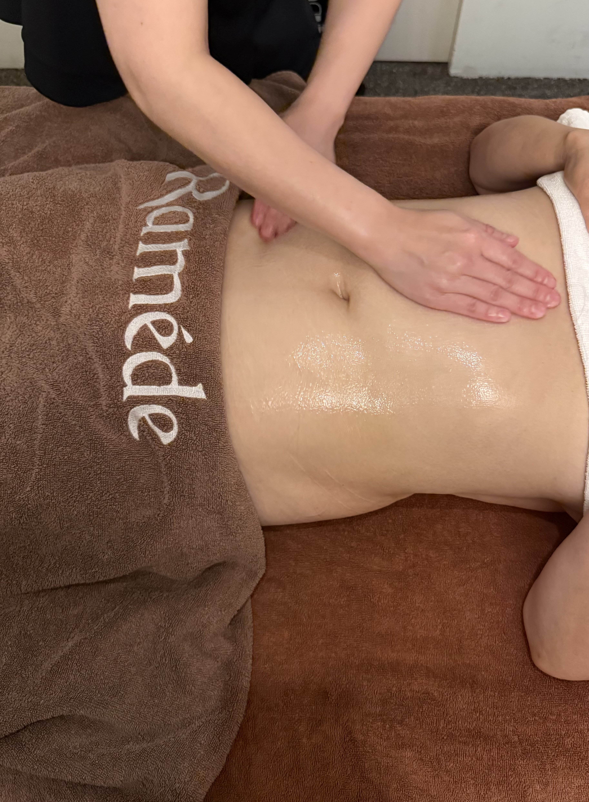
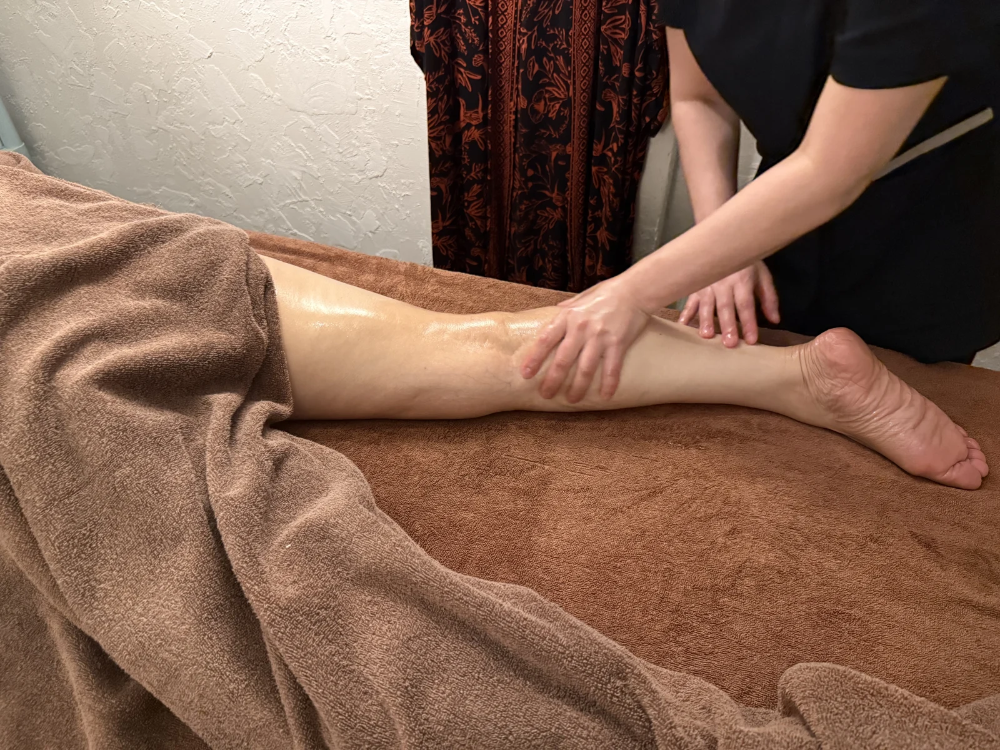
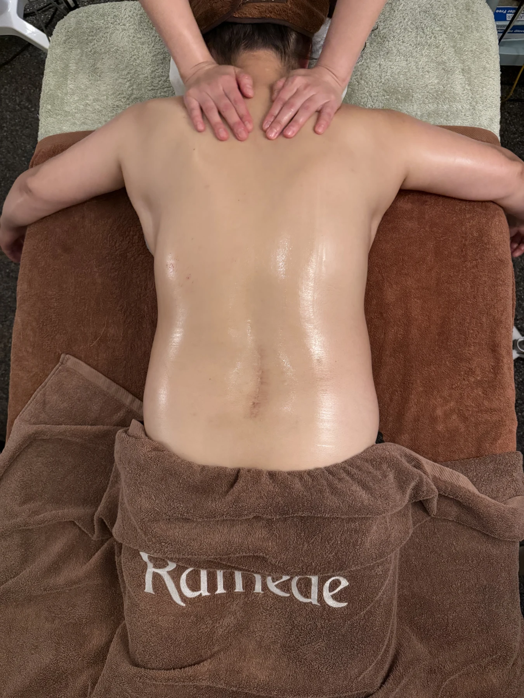
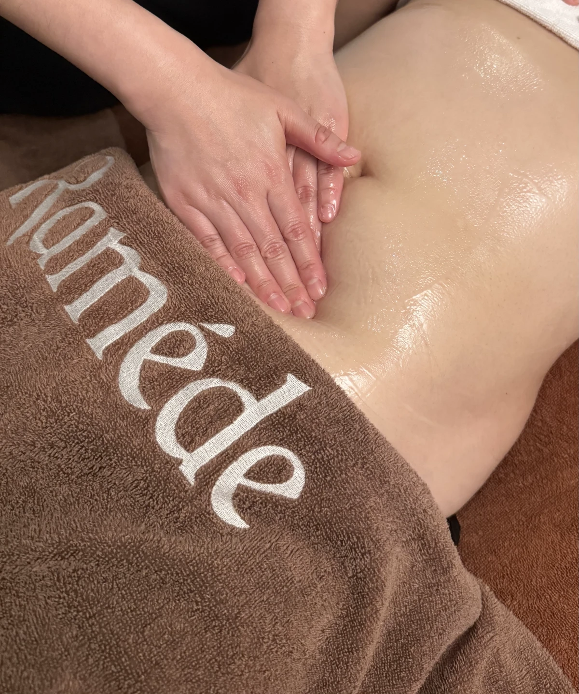
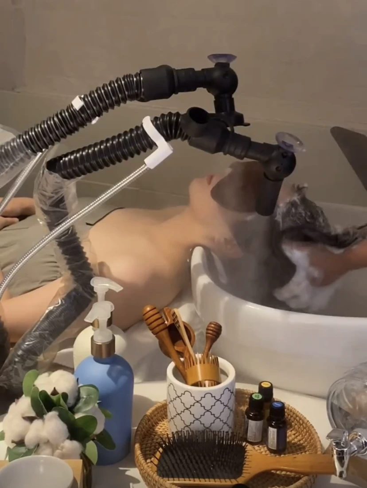
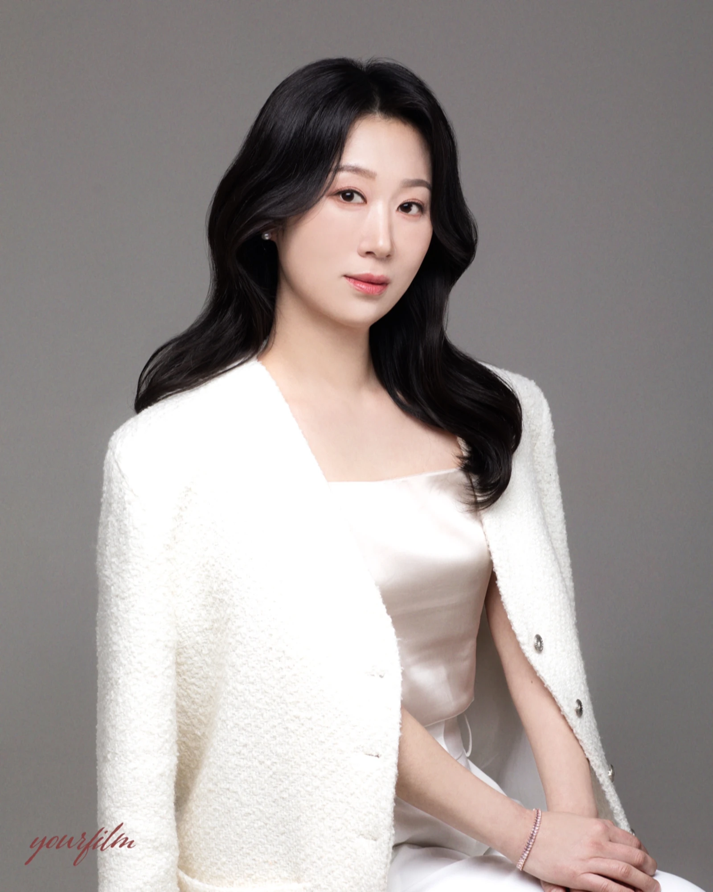

RAMÈDE ESTHETIC
About Ramède
한 분에게 집중하는 라메드.
에너지테라피를 중심으로, 오늘의 컨디션에 맞는 관리 방향을 함께 찾습니다.
THE RAMÈDE APPROACH
Care begins
with you.
오늘의 컨디션에서
시작하는 케어.
원하는 부위와 생활 습관을 충분히 이야기한 뒤,
에너지테라피·고주파·수기로
관리 방향을 함께 찾습니다.



01 / THE RAMÈDE WAY
In balance.
몸의 이야기를 듣는 시간.
같은 부위의 고민도 필요한 관리는 다를 수 있습니다.
한 분의 컨디션을 살피는 상담에서 시작합니다.
어깨와 등부터 하체까지.
원하는 부위와 관리 목적을 함께 확인합니다.
02 / THE RAMÈDE WAY
Every detail.
필요한 곳에, 세심한 손길.
에너지테라피를 중심으로 고주파와 수기를 함께.
한 분에게 필요한 시간을 구성합니다.
관리 구성과 소요 시간을 먼저 안내하고,
관리 주기와 횟수도 함께 상담합니다.



YUN JIHYEON / DIRECTORA NOTE FROM RAMÈDE
With
sincerity.
한 분 한 분에게,
정성을 다하는 마음.
안녕하세요. 거제에서 라메드 에스테틱을 운영하는 윤지현입니다. 재방문과 소개로 이어져온 라메드는 편안한 상담과 꼼꼼한 디테일 케어를 소중히 생각합니다.
라메드에서 보내는 시간이 오롯이 자신을 돌보는 편안한 시간이 되도록, 충분히 이야기를 나누고 세심하게 살피겠습니다.
라메드 에스테틱 원장 윤지현
원장 자격·수료 사항 ＋
- 에스테틱 운영 4년 차
- 피부관리사 국가자격증 취득 / 종합미용사 면허 취득
- 에너지테라피 자격증 2급 수료
- 체형관리사·두피관리사 자격증 1급 수료
- 경락마사지 강사증 1급 수료
COMFORT, IN EVERY DETAIL
편안한 시간을 위한
깨끗한 준비.
위생소독기
관리 도구의 위생을 세심하게 챙깁니다.
일회용 소모품
일회용 안면커버와 해면을 사용합니다.
매일 세탁하는 수건
관리 고객 수에 맞춰 매일 세탁합니다.
에스테틱 운영 경험
누적 방문고객
1:1 맞춤 케어
YOUR OWN MOMENT
For yourself.
오늘의 컨디션과 원하는 관리를 이야기해주세요.
상담 · 예약 문의 ↗